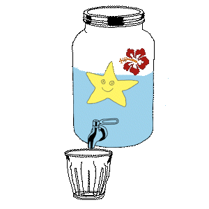

À propos
👋 Bonjour ! Je m’appelle Alice.
Je suis une graphiste débordante de créativité, spécialisée dans la création d’identités visuelles et de sites vitrines, notamment pour des portfolios.
Passionnée par la culture, l’art et les livres, j’aime concevoir des univers visuels qui reflètent l’essence de chaque projet. Mon objectif est d’accompagner mes clients dans la valorisation de leur image avec des créations à la fois esthétiques et cohérentes.
N’hésitez pas à me contacter pour en savoir plus sur mes services :
→ alice.desruelle@gmail.comMes centres d'intérêts
- Albums jeunesse
- Bandes dessinées
- Romans anglophones
- Code
- Alfons Mucha
- Montage vidéo
- Cinéma d'animation
- Randonnées
- William Morris
- Rosa Bonheur